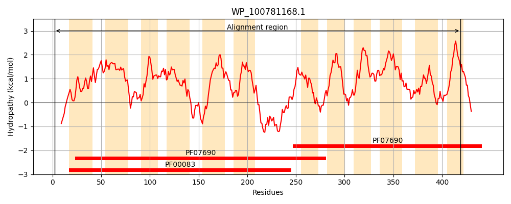
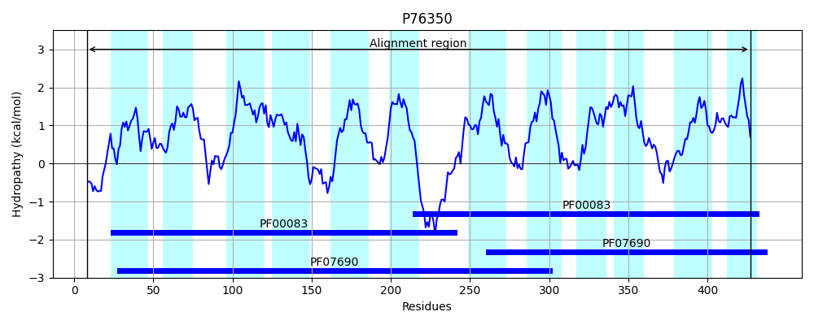
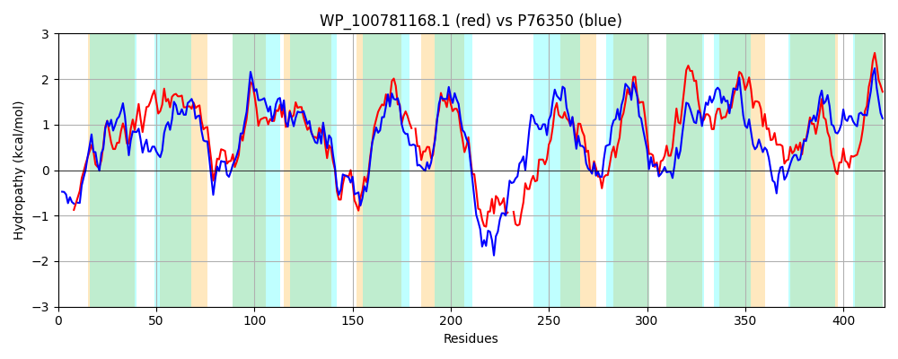

Hit Accession: P76350
Hit TCID: 2.A.1.6.6
Hit Description: gnl|BL_ORD_ID|11461 gnl|TC-DB|P76350|2.A.1.6.6 Shikimate transporter - Escherichia coli.
Mach Len: 421
e:0.000000
Query TMS Count : 12
Hit TMS Count: 12
TMS-Overlap Score: 11.450000
Predicted Substrates:CHEBI:5584;hydron, CHEBI:9133;shikimic acid
BLAST Alignment:
Score: 815 , Bit scores: 318 bits, E-value: 4.1e-105, Alignment length: 421, Percentage identity: 38
Query: 2 SNPQDNTASILQKNKKVLIASLTGSAIEWFDYFLYGTAAALVFNKIFFPMVDPVIGLILSWLSFSLTFFIRPIGGVIFAHIGDRIGRKKTLVLTLSLMGSATVAIGLLPTYEMVGLWAPALLITLRIIQGMGIGGEWGGALLLAYEYAPEKRKGFFGSIPQAGVTIGMLMATFIVSLMTLF-DETQFLAWGWRIPFLLSSVLVFLGLWIRKDIDETPAFKQVKKSGQVAK--APLRETLKHHWREVLIAAGLKVVETAPFYIFSTFVVSYATTTLSYQKSQALESVTLGALVATVMIPLMGLLSDKVGRQKMYTLSVVLLGLFIVPWFLLLDTGTNWGIMLATVVAFGILWAPVTAVLGTLCSEIFSANVRYTGITLGYQLGAALAGGTAPLIATGLLAKYDGNWRPVAVYLGVTVVISLL 419
+ P + T S L + ++ + S G+ ++W+D+ LYG AALVFN+ FFP V P +G + ++ +F + F RP+GGVIF H GDR+GRK+ L+LT+ +MG AT IG+LP++ +G WAP LL+TLR IQG +GGEWGGA LL+ E AP+ +K F+ S Q G +G+L++T +VSL+++ + QFL+WGWRIPFL S VLV LW+R ++E+ F+Q + AK P+ E L H L L++ E YI + F ++Y+T + + L L ++ + IP L+D+ GR+++Y ++ L P+F+ L+ + + I+ +++ I V V + +E+F A+ RY+G +GYQ+ + + GG P IA L+ + GNW VA+YL +IS +
Sbjct: 8 TRPDEGTLS-LSRARRAALGSFAGAVVDWYDFLLYGITAALVFNREFFPQVSPAMGTLAAFATFGVGFLFRPLGGVIFGHFGDRLGRKRMLMLTVWMMGIATALIGILPSFSTIGWWAPILLVTLRAIQGFAVGGEWGGAALLSVESAPKNKKAFYSSGVQVGYGVGLLLSTGLVSLISMMTTDEQFLSWGWRIPFLFSIVLVLGALWVRNGMEESAEFEQQQHYQAAAKKRIPVIEALLRHPGAFLKIIALRLCELLTMYIVTAFALNYSTQNMGLPRELFLNIGLLVGGLSCLTIPCFAWLADRFGRRRVYITGTLIGTLSAFPFFMALEAQSIFWIVFFSIMLANIAHDMVVCVQQPMFTEMFGASYRYSGAGVGYQVASVVGGGFTPFIAAALITYFAGNWHSVAIYLLAGCLISAM 427 | Protein Hydropathy Plots: |
|---|
|  |  |
Pairwise Alignment-Hydropathy Plot:
|
|---|
|  |